<!-- Generated by verification/v1-qa/publish-gallery.mjs -->
<!doctype html><html lang="zh-CN"><meta charset="utf-8"><meta name="viewport" content="width=device-width,initial-scale=1"><title>AeroSim 1.0 开发候选 · 原图与实际对照</title><style>body{background:#090d14;color:#f2f6fc;font:16px/1.6 system-ui;margin:0}main{max-width:1840px;margin:auto;padding:28px}a{color:#8fb1ff}.notice{padding:18px;background:#2b2419;border-left:4px solid #ffb547}.pair{display:grid;grid-template-columns:1fr 1fr;gap:16px}figure{margin:0}img{width:100%;height:auto}figcaption{padding:8px 0}section{margin:36px 0;border-top:1px solid #2a374a;padding-top:12px}nav{font-size:14px}@media(max-width:960px){.pair{grid-template-columns:1fr}main{padding:16px}}</style><main><h1>AeroSim · 1.0 开发候选全页面对照</h1><p class="notice">应用版本 1.0.0 · 批次 candidate-20261009-05 · 用户验收 PENDING。左图是23张原始概念效果图，右图是真正Unity运行截图；不把设计图冒充运行结果、不把版本号或几何通过冒充视觉一致。全部页面UI/HUD/Text100%，1920×1080。本机隔离QA数据不是用户成绩。</p><p>捕获UTC 2026-10-09T20:59:39.1868140Z · Runtime errors 0 · <a href="assets/ui-v1/candidate-20261009-05/manifest.json">元数据与SHA256</a> · <a href="assets/ui-v1/candidate-20261009-05/gallery.md">GitHub图文图册</a></p><nav><a href="#page-01">01 Aerial-Onboarding</a> · <a href="#page-02">02 Aerial-Controller</a> · <a href="#page-03">03 Aerial-Home</a> · <a href="#page-04">04 Aerial-Academy</a> · <a href="#page-05">05 Aerial-FreeFlight</a> · <a href="#page-06">06 FPV-Home</a> · <a href="#page-07">07 FPV-Challenges</a> · <a href="#page-08">08 FPV-Tuning</a> · <a href="#page-09">09 FPV-Flight</a> · <a href="#page-10">10 Professional-Home</a> · <a href="#page-11">11 Professional-Preflight</a> · <a href="#page-12">12 Professional-Flight</a> · <a href="#page-13">13 Professional-Instructor</a> · <a href="#page-14">14 Aerial-Results</a> · <a href="#page-15">15 Aerial-Replay</a> · <a href="#page-16">16 Aerial-Readiness</a> · <a href="#page-17">17 Aerial-Report</a> · <a href="#page-18">18 FPV-OsdEditor</a> · <a href="#page-19">19 Professional-Brief</a> · <a href="#page-20">20 Professional-Catalog</a> · <a href="#page-21">21 Professional-MissionEditor</a> · <a href="#page-22">22 Aerial-Settings</a> · <a href="#page-23">23 Aerial-Flight</a></nav><section id="page-01"><h2>01 · Aerial-Onboarding</h2><p>Learning path selection (not profile entry step) · 当前截图 2 条自动未通过/候选；视觉和人工验收 PENDING。</p><div class="pair"><figure><figcaption>原始概念图 · 1672×941 · 未修改</figcaption><a href="assets/aerosim-us-01-onboarding-learning-path.png">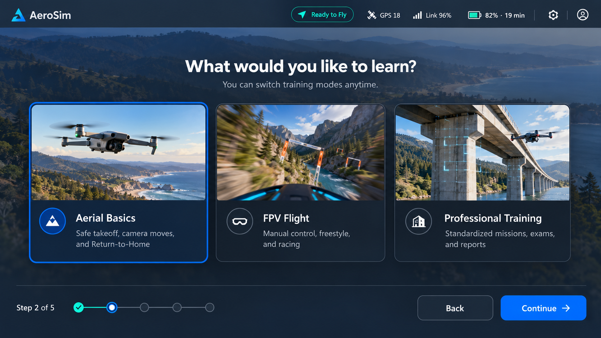</a></figure><figure><figcaption>1.0.0 开发候选 · 原始运行截图 · 1920×1080</figcaption><a href="assets/ui-v1/candidate-20261009-05/Aerial-Onboarding.png">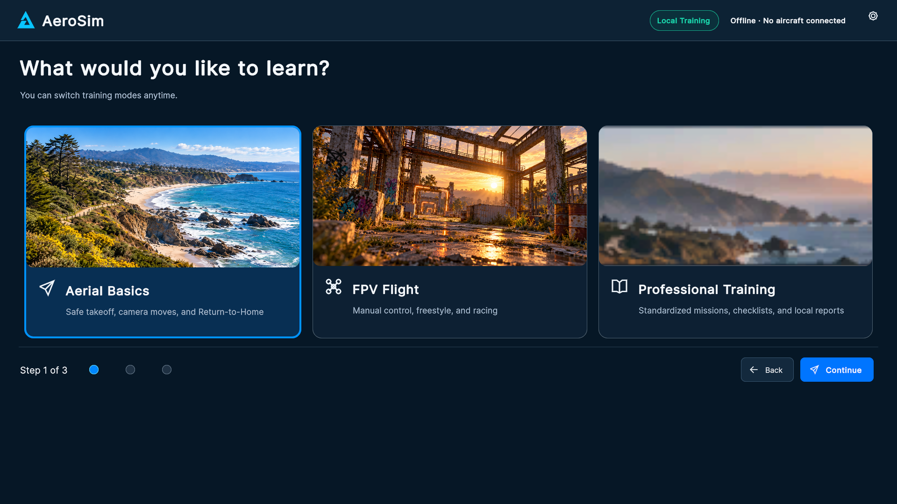</a></figure></div></section>
<section id="page-02"><h2>02 · Aerial-Controller</h2><p>Target page as shown in locked reference · 当前截图 2 条自动未通过/候选；视觉和人工验收 PENDING。</p><div class="pair"><figure><figcaption>原始概念图 · 1672×941 · 未修改</figcaption><a href="assets/aerosim-us-02-controller-calibration.png">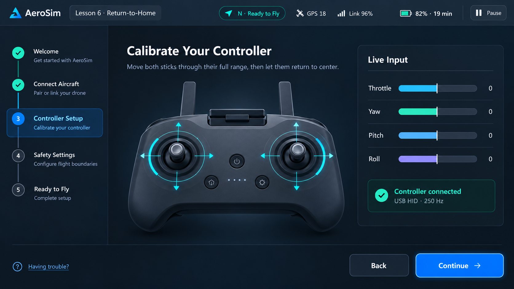</a></figure><figure><figcaption>1.0.0 开发候选 · 原始运行截图 · 1920×1080</figcaption><a href="assets/ui-v1/candidate-20261009-05/Aerial-Controller.png">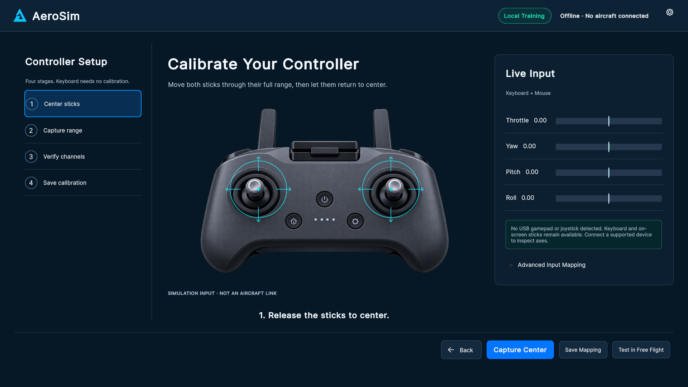</a></figure></div></section>
<section id="page-03"><h2>03 · Aerial-Home</h2><p>Target page as shown in locked reference · 当前截图 2 条自动未通过/候选；视觉和人工验收 PENDING。</p><div class="pair"><figure><figcaption>原始概念图 · 1672×941 · 未修改</figcaption><a href="assets/aerosim-us-03-aerial-home.png">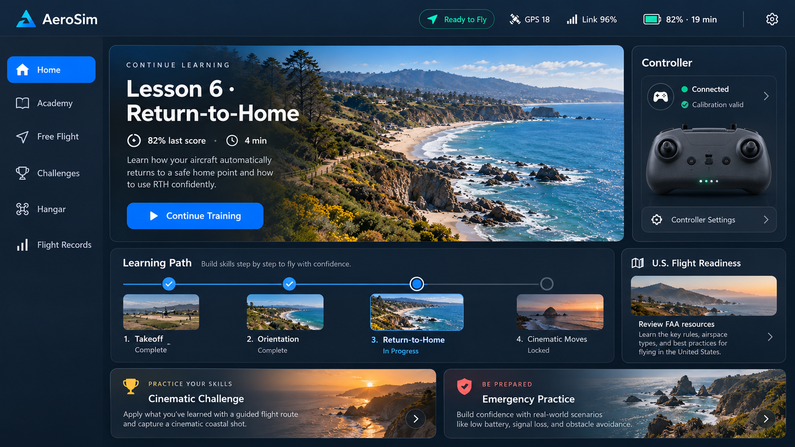</a></figure><figure><figcaption>1.0.0 开发候选 · 原始运行截图 · 1920×1080</figcaption><a href="assets/ui-v1/candidate-20261009-05/Aerial-Home.png">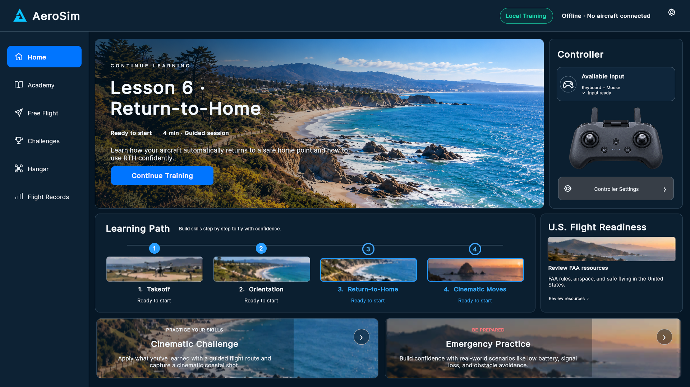</a></figure></div></section>
<section id="page-04"><h2>04 · Aerial-Academy</h2><p>Target page as shown in locked reference · 当前截图 2 条自动未通过/候选；视觉和人工验收 PENDING。</p><div class="pair"><figure><figcaption>原始概念图 · 1672×941 · 未修改</figcaption><a href="assets/aerosim-us-04-aerial-academy.png">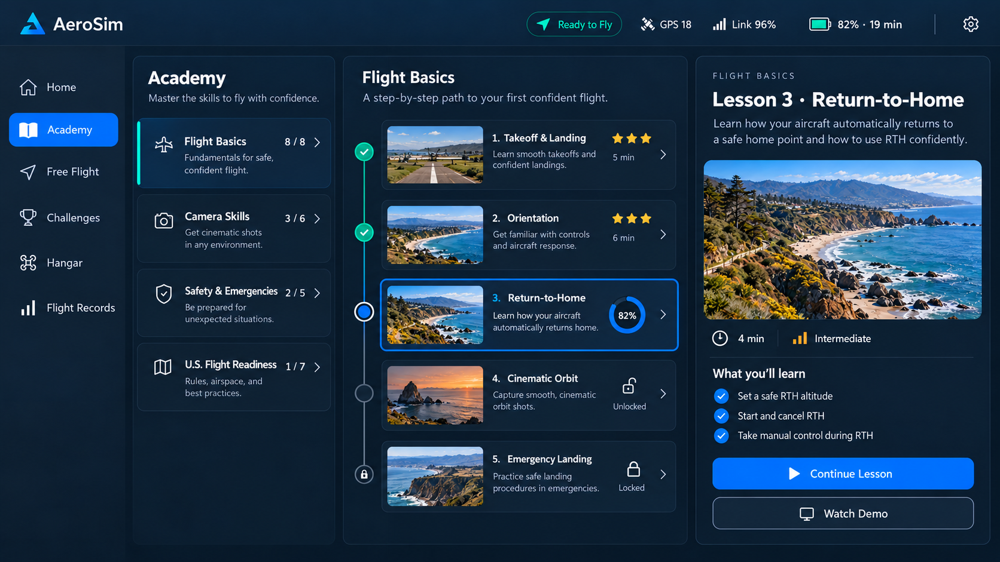</a></figure><figure><figcaption>1.0.0 开发候选 · 原始运行截图 · 1920×1080</figcaption><a href="assets/ui-v1/candidate-20261009-05/Aerial-Academy.png">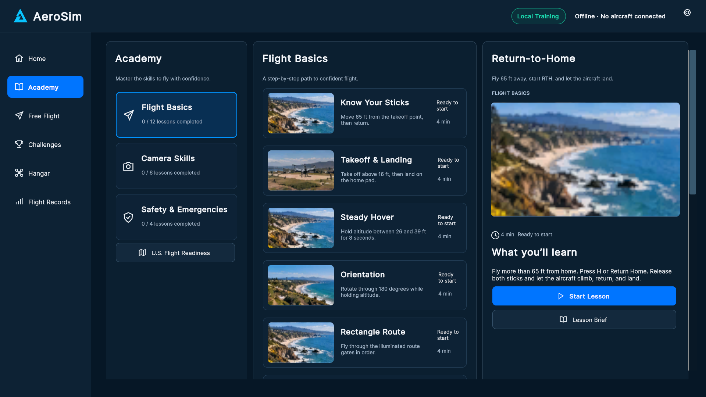</a></figure></div></section>
<section id="page-05"><h2>05 · Aerial-FreeFlight</h2><p>Target page as shown in locked reference · 当前截图 2 条自动未通过/候选；视觉和人工验收 PENDING。</p><div class="pair"><figure><figcaption>原始概念图 · 1672×941 · 未修改</figcaption><a href="assets/aerosim-us-05-free-flight-setup.png">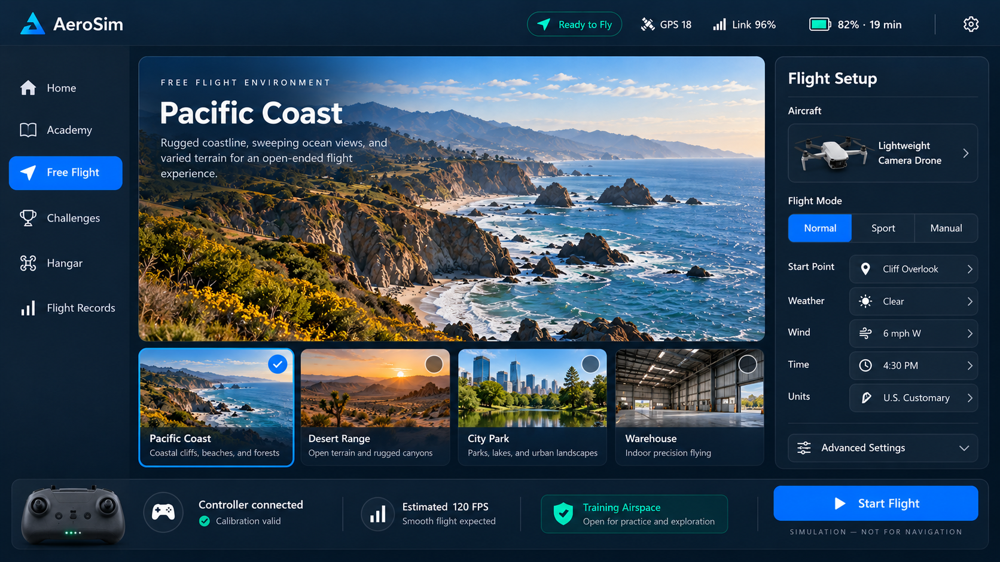</a></figure><figure><figcaption>1.0.0 开发候选 · 原始运行截图 · 1920×1080</figcaption><a href="assets/ui-v1/candidate-20261009-05/Aerial-FreeFlight.png">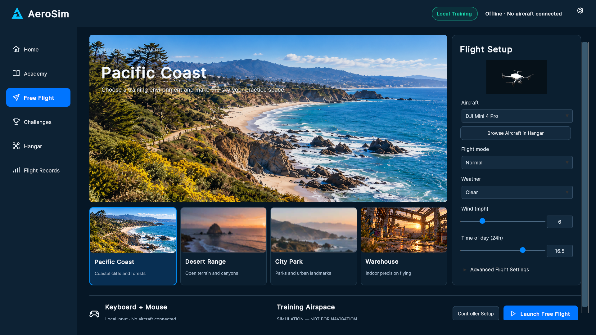</a></figure></div></section>
<section id="page-06"><h2>06 · FPV-Home</h2><p>Target page as shown in locked reference · 当前截图 2 条自动未通过/候选；视觉和人工验收 PENDING。</p><div class="pair"><figure><figcaption>原始概念图 · 1672×941 · 未修改</figcaption><a href="assets/aerosim-us-06-fpv-home.png">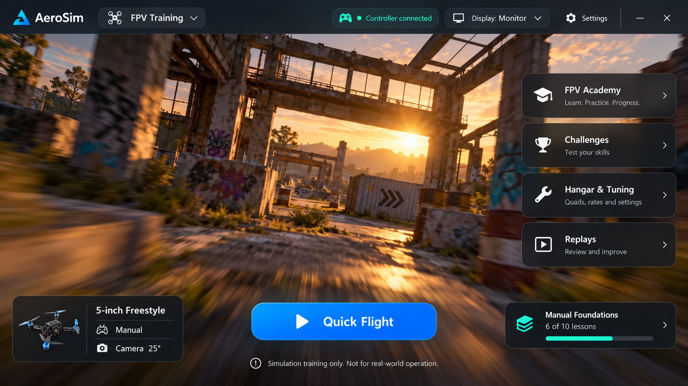</a></figure><figure><figcaption>1.0.0 开发候选 · 原始运行截图 · 1920×1080</figcaption><a href="assets/ui-v1/candidate-20261009-05/FPV-Home.png">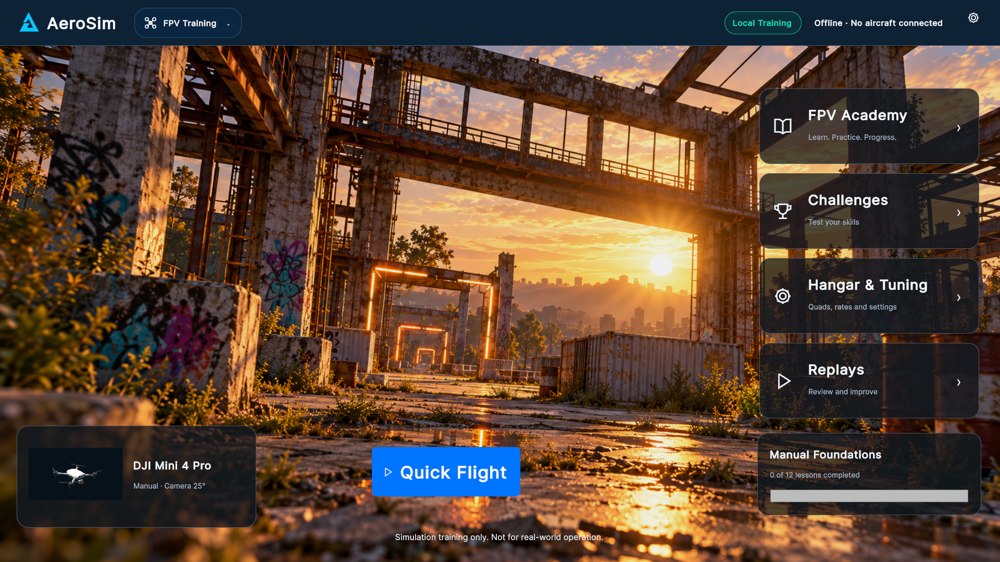</a></figure></div></section>
<section id="page-07"><h2>07 · FPV-Challenges</h2><p>Target page as shown in locked reference · 当前截图 2 条自动未通过/候选；视觉和人工验收 PENDING。</p><div class="pair"><figure><figcaption>原始概念图 · 1672×941 · 未修改</figcaption><a href="assets/aerosim-us-07-fpv-challenges.png">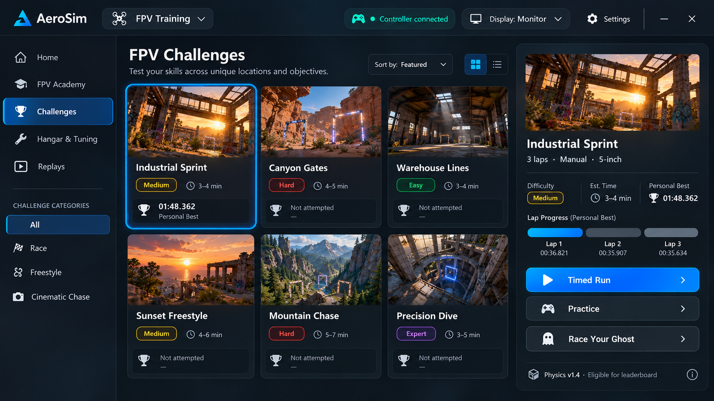</a></figure><figure><figcaption>1.0.0 开发候选 · 原始运行截图 · 1920×1080</figcaption><a href="assets/ui-v1/candidate-20261009-05/FPV-Challenges.png">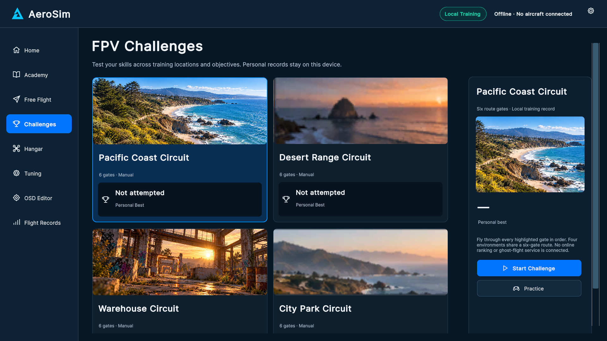</a></figure></div></section>
<section id="page-08"><h2>08 · FPV-Tuning</h2><p>Target page as shown in locked reference · 当前截图 2 条自动未通过/候选；视觉和人工验收 PENDING。</p><div class="pair"><figure><figcaption>原始概念图 · 1672×941 · 未修改</figcaption><a href="assets/aerosim-us-08-fpv-tuning.png">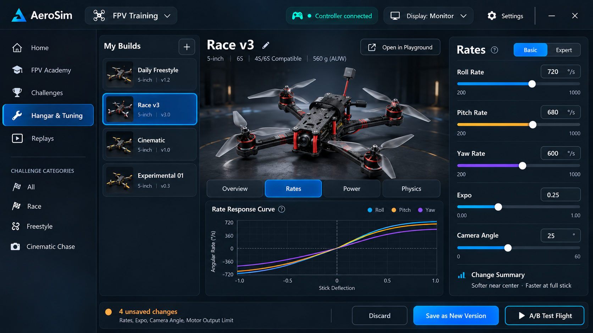</a></figure><figure><figcaption>1.0.0 开发候选 · 原始运行截图 · 1920×1080</figcaption><a href="assets/ui-v1/candidate-20261009-05/FPV-Tuning.png">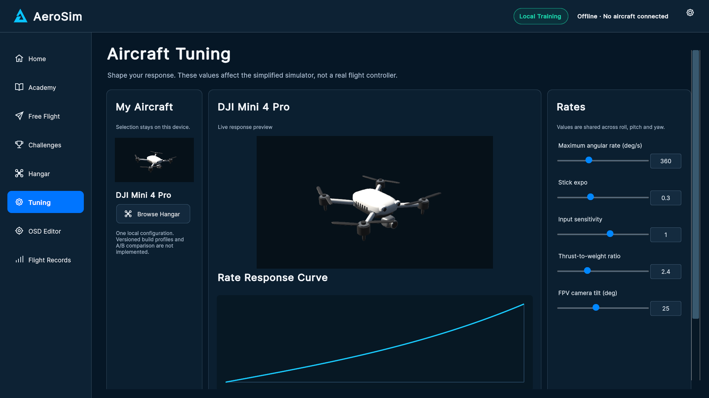</a></figure></div></section>
<section id="page-09"><h2>09 · FPV-Flight</h2><p>Target page as shown in locked reference · 当前截图 0 条自动未通过/候选；视觉和人工验收 PENDING。</p><div class="pair"><figure><figcaption>原始概念图 · 1672×941 · 未修改</figcaption><a href="assets/aerosim-us-09-fpv-race-osd.png">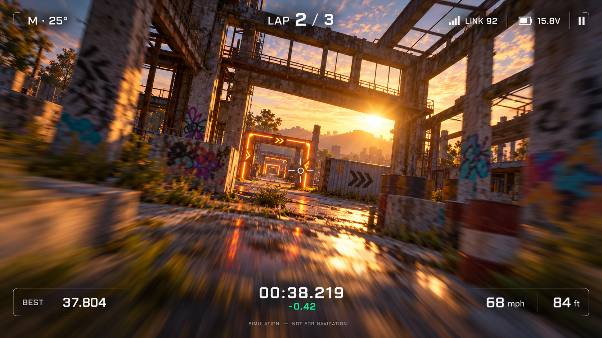</a></figure><figure><figcaption>1.0.0 开发候选 · 原始运行截图 · 1920×1080</figcaption><a href="assets/ui-v1/candidate-20261009-05/FPV-Flight.png">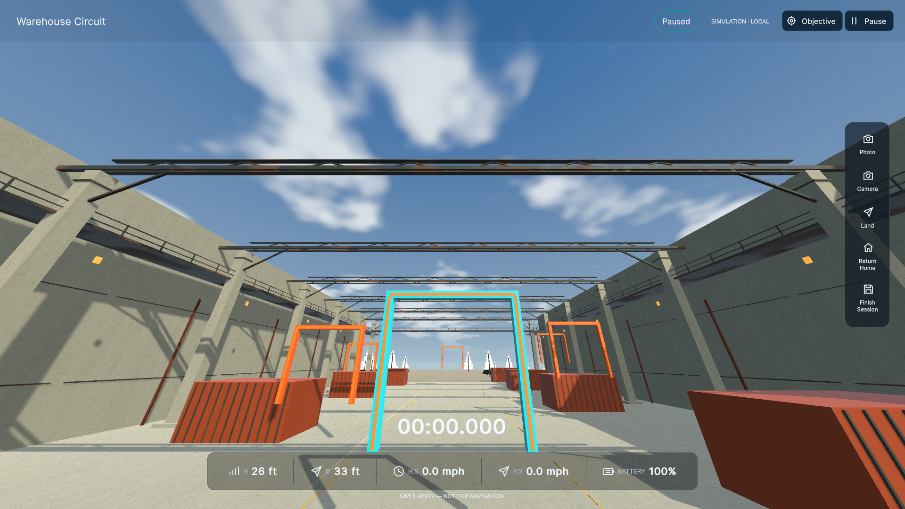</a></figure></div></section>
<section id="page-10"><h2>10 · Professional-Home</h2><p>Target page as shown in locked reference · 当前截图 2 条自动未通过/候选；视觉和人工验收 PENDING。</p><div class="pair"><figure><figcaption>原始概念图 · 1672×941 · 未修改</figcaption><a href="assets/aerosim-us-10-professional-dashboard.png">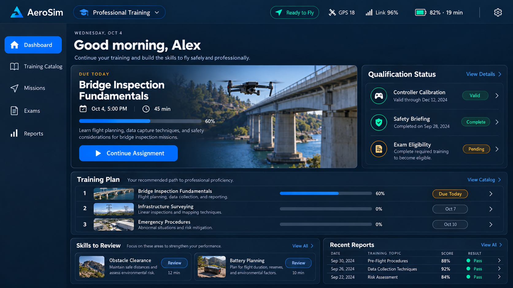</a></figure><figure><figcaption>1.0.0 开发候选 · 原始运行截图 · 1920×1080</figcaption><a href="assets/ui-v1/candidate-20261009-05/Professional-Home.png">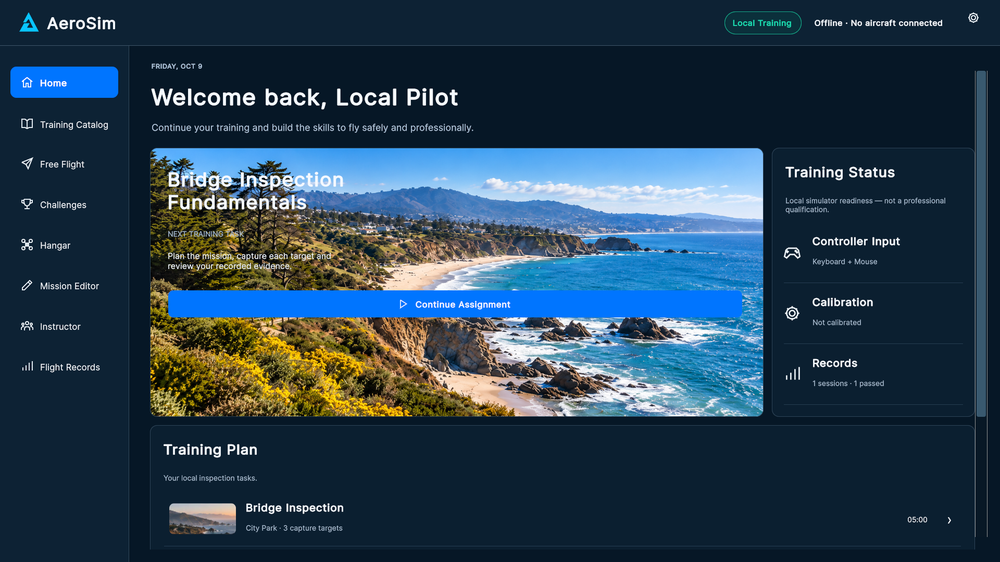</a></figure></div></section>
<section id="page-11"><h2>11 · Professional-Preflight</h2><p>Target page as shown in locked reference · 当前截图 2 条自动未通过/候选；视觉和人工验收 PENDING。</p><div class="pair"><figure><figcaption>原始概念图 · 1672×941 · 未修改</figcaption><a href="assets/aerosim-us-11-professional-preflight.png">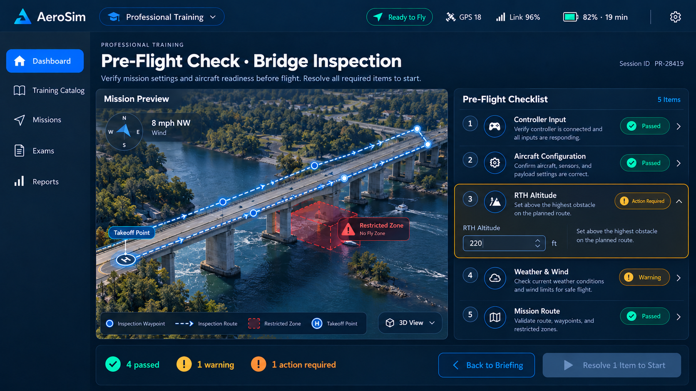</a></figure><figure><figcaption>1.0.0 开发候选 · 原始运行截图 · 1920×1080</figcaption><a href="assets/ui-v1/candidate-20261009-05/Professional-Preflight.png">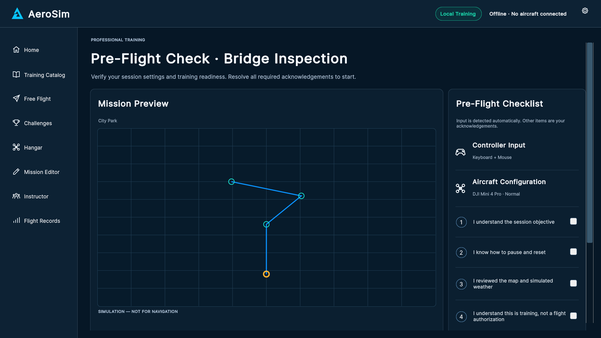</a></figure></div></section>
<section id="page-12"><h2>12 · Professional-Flight</h2><p>Target page as shown in locked reference · 当前截图 0 条自动未通过/候选；视觉和人工验收 PENDING。</p><div class="pair"><figure><figcaption>原始概念图 · 1672×941 · 未修改</figcaption><a href="assets/aerosim-us-12-professional-mission.png">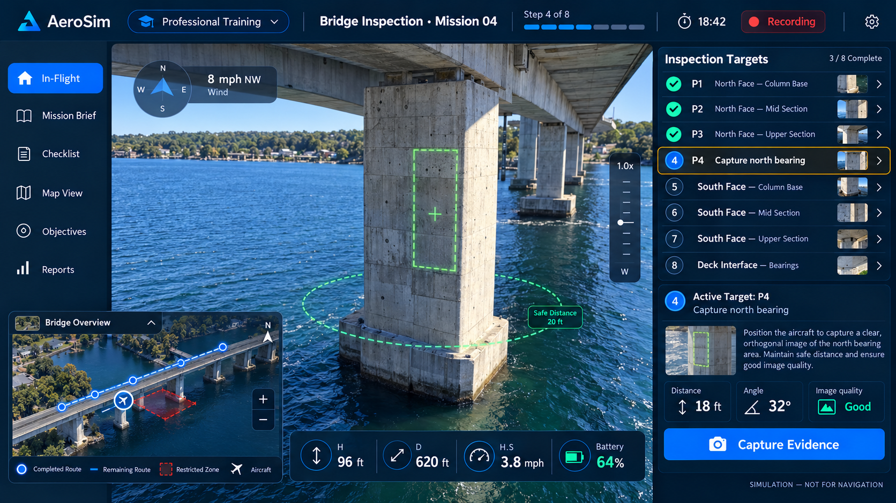</a></figure><figure><figcaption>1.0.0 开发候选 · 原始运行截图 · 1920×1080</figcaption><a href="assets/ui-v1/candidate-20261009-05/Professional-Flight.png">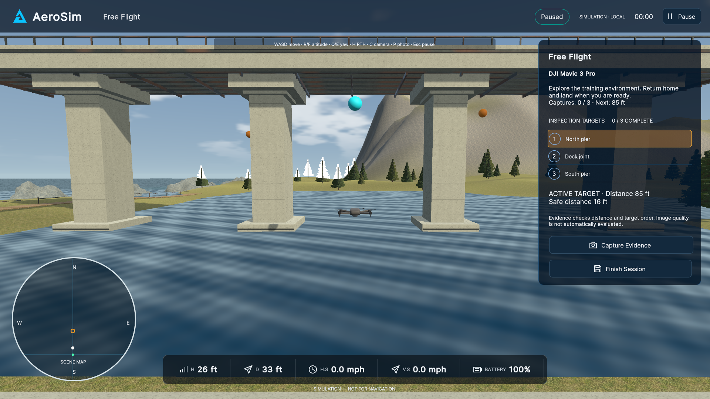</a></figure></div></section>
<section id="page-13"><h2>13 · Professional-Instructor</h2><p>Instructor four-view observed sessions (local simulation must be labeled) · 当前截图 2 条自动未通过/候选；视觉和人工验收 PENDING。</p><div class="pair"><figure><figcaption>原始概念图 · 1672×941 · 未修改</figcaption><a href="assets/aerosim-us-13-instructor-live-session.png">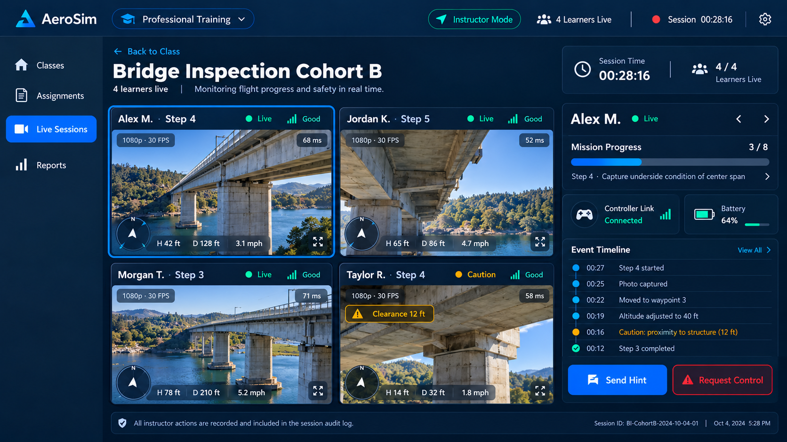</a></figure><figure><figcaption>1.0.0 开发候选 · 原始运行截图 · 1920×1080</figcaption><a href="assets/ui-v1/candidate-20261009-05/Professional-Instructor.png">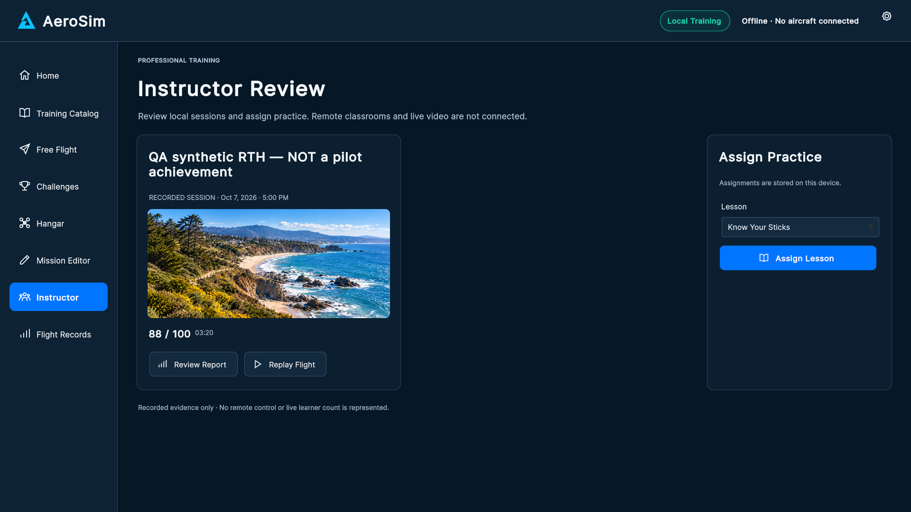</a></figure></div></section>
<section id="page-14"><h2>14 · Aerial-Results</h2><p>Synthetic QA results fixture (not a real achievement) · 当前截图 2 条自动未通过/候选；视觉和人工验收 PENDING。</p><div class="pair"><figure><figcaption>原始概念图 · 1672×941 · 未修改</figcaption><a href="assets/aerosim-us-14-flight-results.png">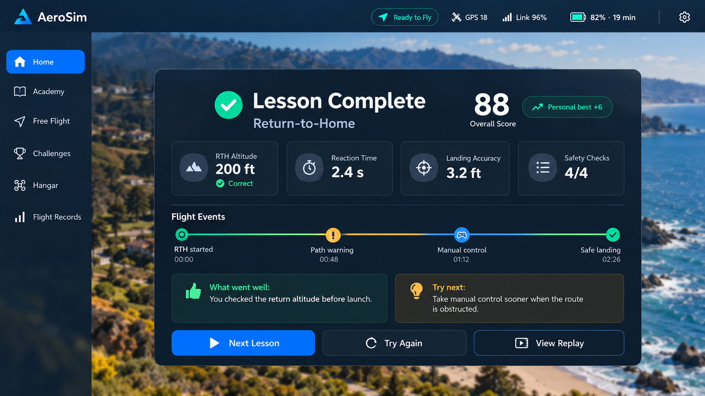</a></figure><figure><figcaption>1.0.0 开发候选 · 原始运行截图 · 1920×1080</figcaption><a href="assets/ui-v1/candidate-20261009-05/Aerial-Results.png">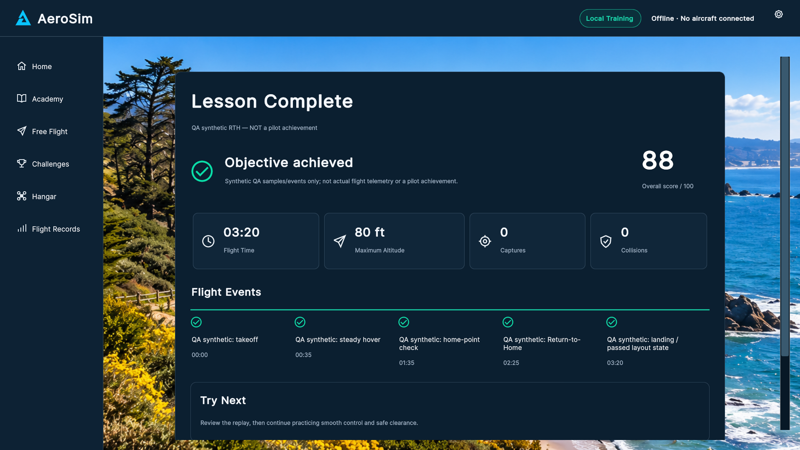</a></figure></div></section>
<section id="page-15"><h2>15 · Aerial-Replay</h2><p>Target page as shown in locked reference · 当前截图 2 条自动未通过/候选；视觉和人工验收 PENDING。</p><div class="pair"><figure><figcaption>原始概念图 · 1672×941 · 未修改</figcaption><a href="assets/aerosim-us-15-replay-analysis.png">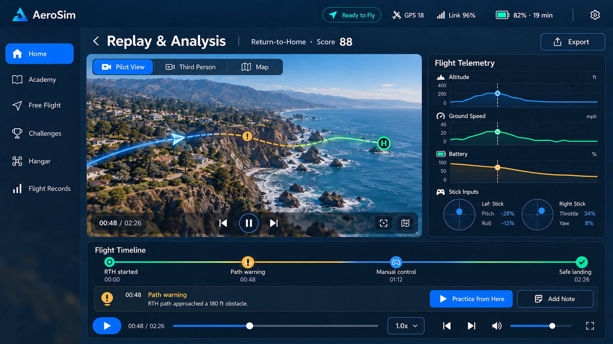</a></figure><figure><figcaption>1.0.0 开发候选 · 原始运行截图 · 1920×1080</figcaption><a href="assets/ui-v1/candidate-20261009-05/Aerial-Replay.png">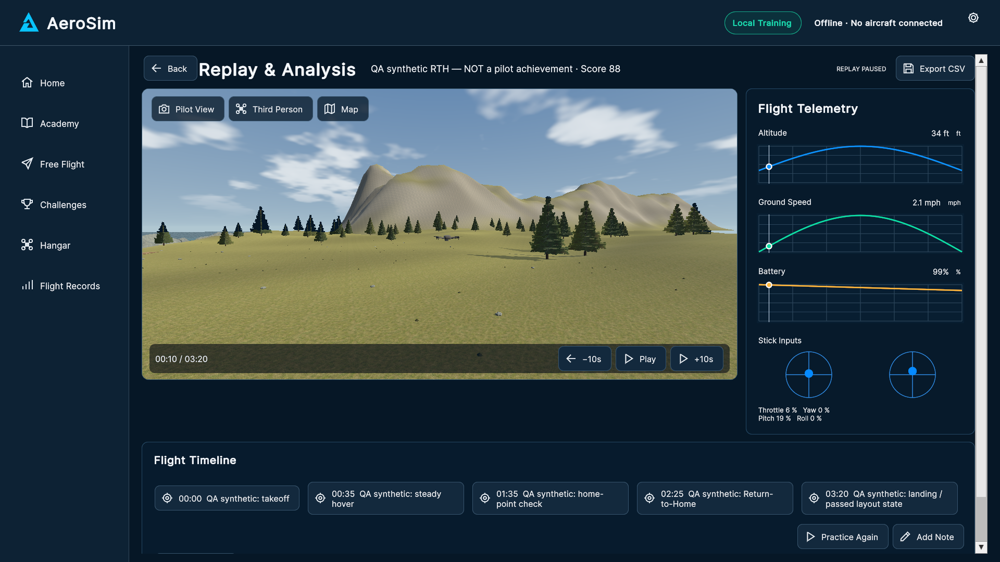</a></figure></div></section>
<section id="page-16"><h2>16 · Aerial-Readiness</h2><p>Target page as shown in locked reference · 当前截图 2 条自动未通过/候选；视觉和人工验收 PENDING。</p><div class="pair"><figure><figcaption>原始概念图 · 1672×941 · 未修改</figcaption><a href="assets/aerosim-us-16-us-flight-readiness.png">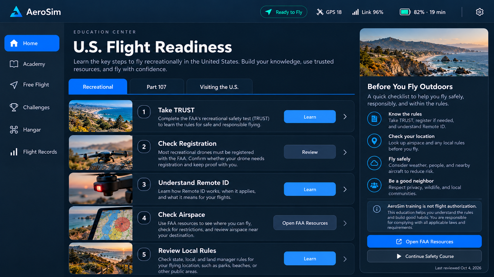</a></figure><figure><figcaption>1.0.0 开发候选 · 原始运行截图 · 1920×1080</figcaption><a href="assets/ui-v1/candidate-20261009-05/Aerial-Readiness.png">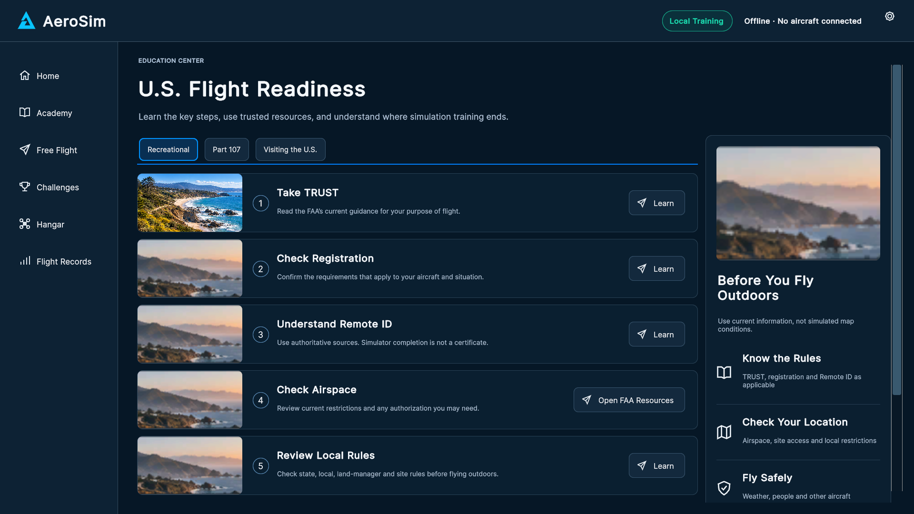</a></figure></div></section>
<section id="page-17"><h2>17 · Aerial-Report</h2><p>Target page as shown in locked reference · 当前截图 2 条自动未通过/候选；视觉和人工验收 PENDING。</p><div class="pair"><figure><figcaption>原始概念图 · 1672×941 · 未修改</figcaption><a href="assets/aerosim-us-17-professional-report.png">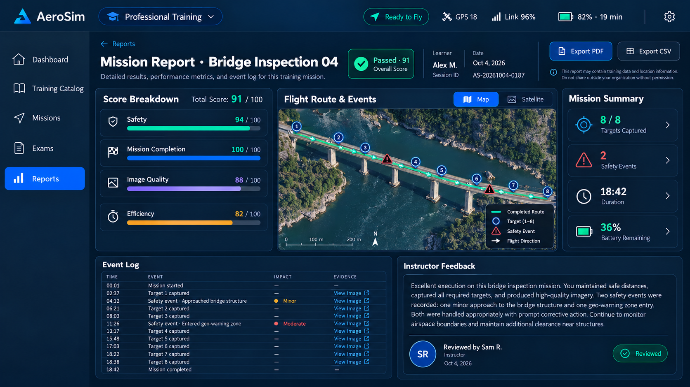</a></figure><figure><figcaption>1.0.0 开发候选 · 原始运行截图 · 1920×1080</figcaption><a href="assets/ui-v1/candidate-20261009-05/Aerial-Report.png">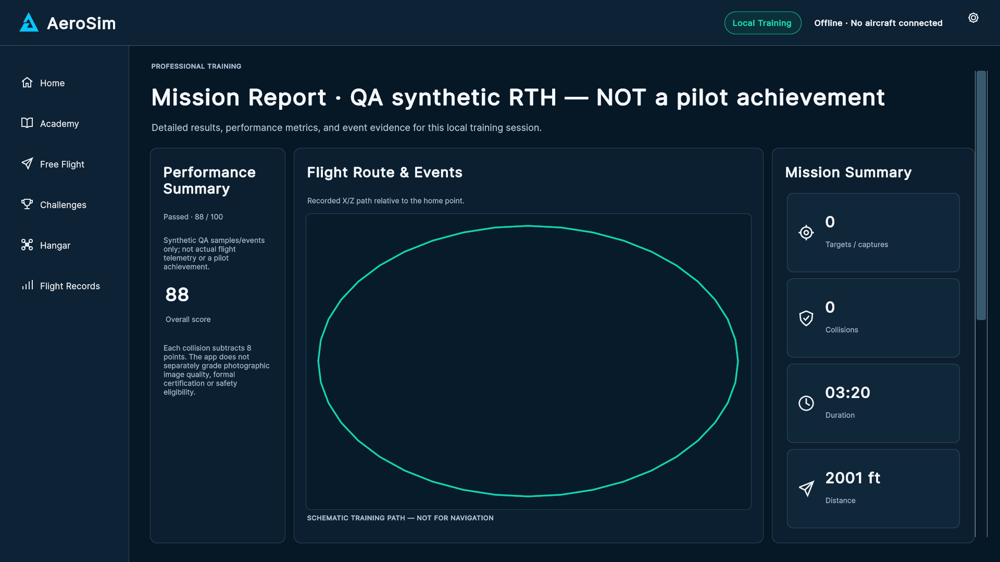</a></figure></div></section>
<section id="page-18"><h2>18 · FPV-OsdEditor</h2><p>Target page as shown in locked reference · 当前截图 2 条自动未通过/候选；视觉和人工验收 PENDING。</p><div class="pair"><figure><figcaption>原始概念图 · 1672×941 · 未修改</figcaption><a href="assets/aerosim-us-18-fpv-osd-editor.png">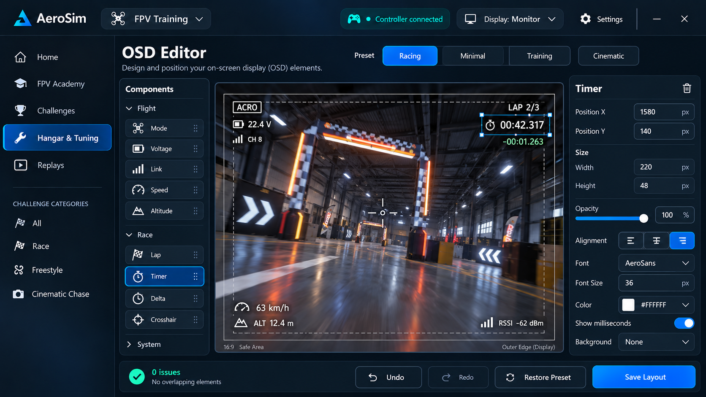</a></figure><figure><figcaption>1.0.0 开发候选 · 原始运行截图 · 1920×1080</figcaption><a href="assets/ui-v1/candidate-20261009-05/FPV-OsdEditor.png">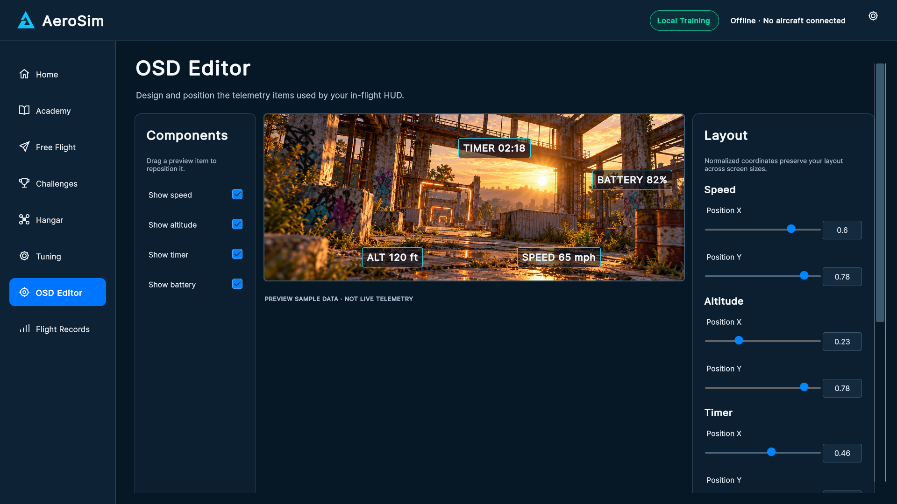</a></figure></div></section>
<section id="page-19"><h2>19 · Professional-Brief</h2><p>Target page as shown in locked reference · 当前截图 2 条自动未通过/候选；视觉和人工验收 PENDING。</p><div class="pair"><figure><figcaption>原始概念图 · 1672×941 · 未修改</figcaption><a href="assets/aerosim-us-19-professional-mission-brief.png">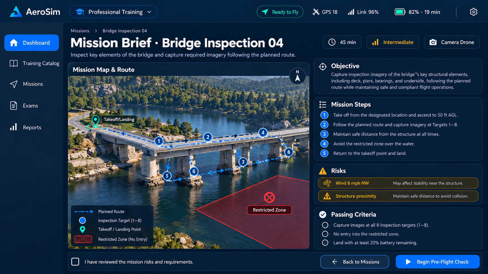</a></figure><figure><figcaption>1.0.0 开发候选 · 原始运行截图 · 1920×1080</figcaption><a href="assets/ui-v1/candidate-20261009-05/Professional-Brief.png">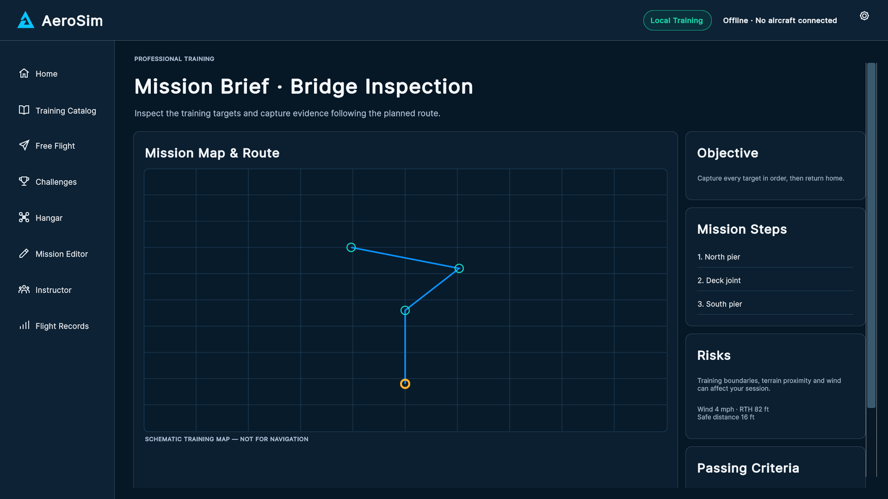</a></figure></div></section>
<section id="page-20"><h2>20 · Professional-Catalog</h2><p>Target page as shown in locked reference · 当前截图 2 条自动未通过/候选；视觉和人工验收 PENDING。</p><div class="pair"><figure><figcaption>原始概念图 · 1672×941 · 未修改</figcaption><a href="assets/aerosim-us-20-professional-training-catalog.png">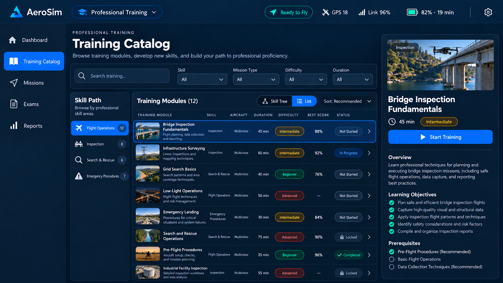</a></figure><figure><figcaption>1.0.0 开发候选 · 原始运行截图 · 1920×1080</figcaption><a href="assets/ui-v1/candidate-20261009-05/Professional-Catalog.png">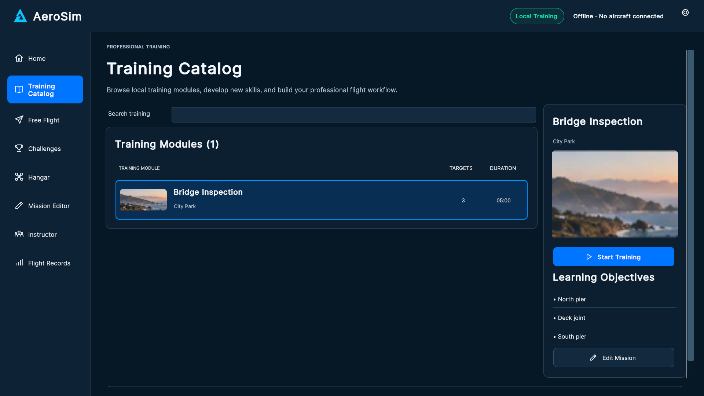</a></figure></div></section>
<section id="page-21"><h2>21 · Professional-MissionEditor</h2><p>Target page as shown in locked reference · 当前截图 2 条自动未通过/候选；视觉和人工验收 PENDING。</p><div class="pair"><figure><figcaption>原始概念图 · 1672×941 · 未修改</figcaption><a href="assets/aerosim-us-21-professional-mission-editor.png">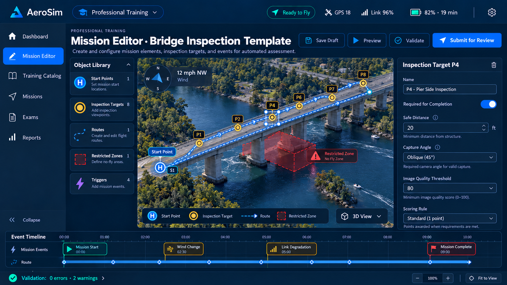</a></figure><figure><figcaption>1.0.0 开发候选 · 原始运行截图 · 1920×1080</figcaption><a href="assets/ui-v1/candidate-20261009-05/Professional-MissionEditor.png">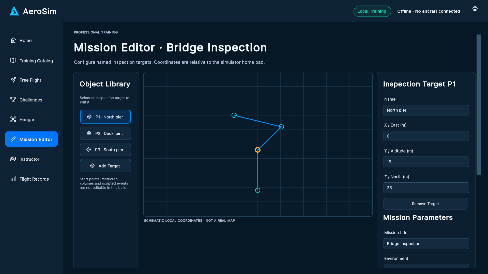</a></figure></div></section>
<section id="page-22"><h2>22 · Aerial-Settings</h2><p>Target page as shown in locked reference · 当前截图 2 条自动未通过/候选；视觉和人工验收 PENDING。</p><div class="pair"><figure><figcaption>原始概念图 · 1672×941 · 未修改</figcaption><a href="assets/aerosim-us-22-global-settings.png">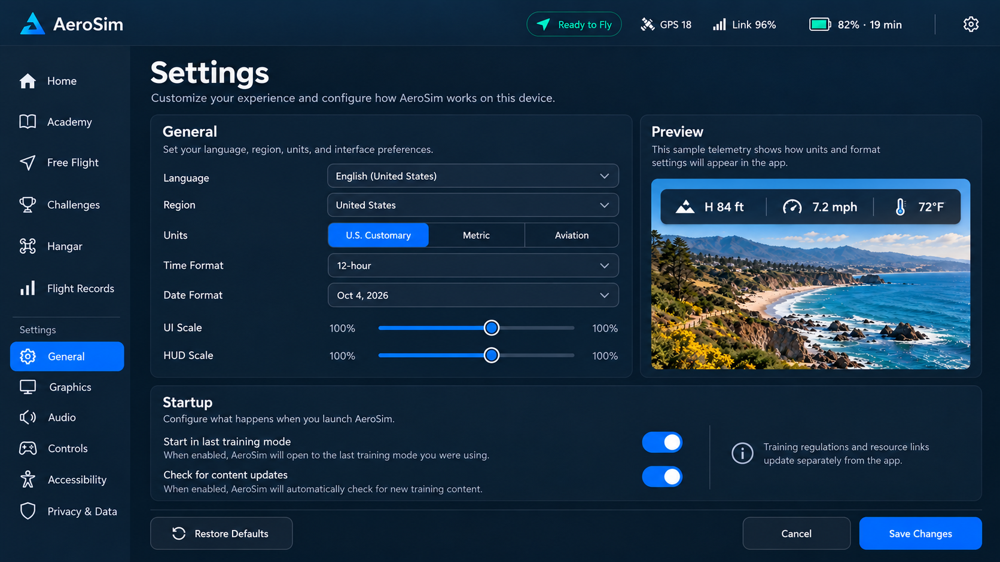</a></figure><figure><figcaption>1.0.0 开发候选 · 原始运行截图 · 1920×1080</figcaption><a href="assets/ui-v1/candidate-20261009-05/Aerial-Settings.png">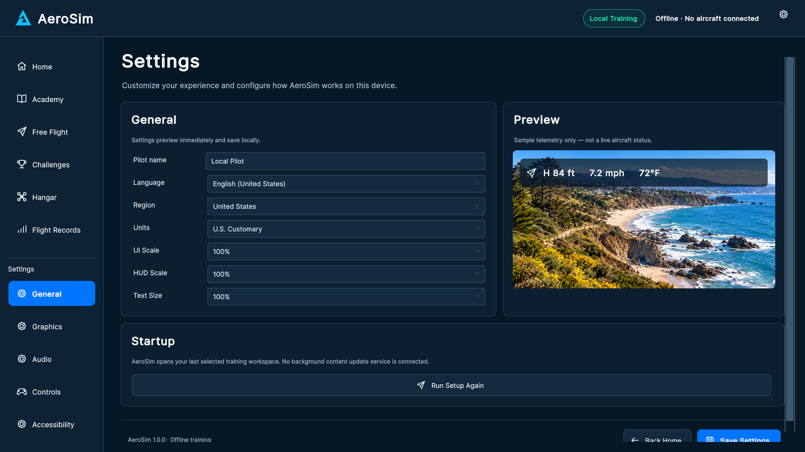</a></figure></div></section>
<section id="page-23"><h2>23 · Aerial-Flight</h2><p>Target page as shown in locked reference · 当前截图 0 条自动未通过/候选；视觉和人工验收 PENDING。</p><div class="pair"><figure><figcaption>原始概念图 · 1672×941 · 未修改</figcaption><a href="assets/aerosim-us-flight-training-ui-v1.png">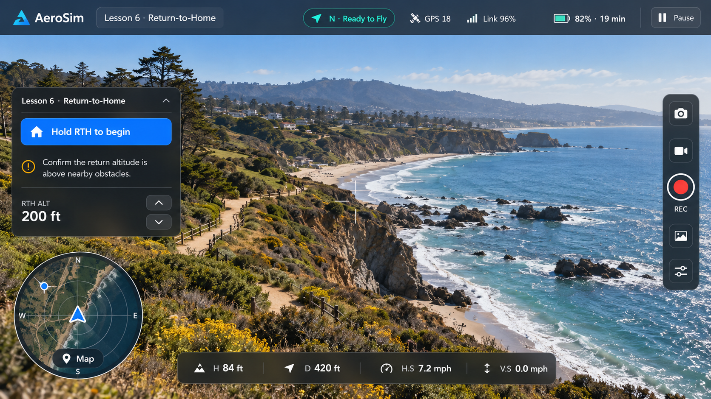</a></figure><figure><figcaption>1.0.0 开发候选 · 原始运行截图 · 1920×1080</figcaption><a href="assets/ui-v1/candidate-20261009-05/Aerial-Flight.png">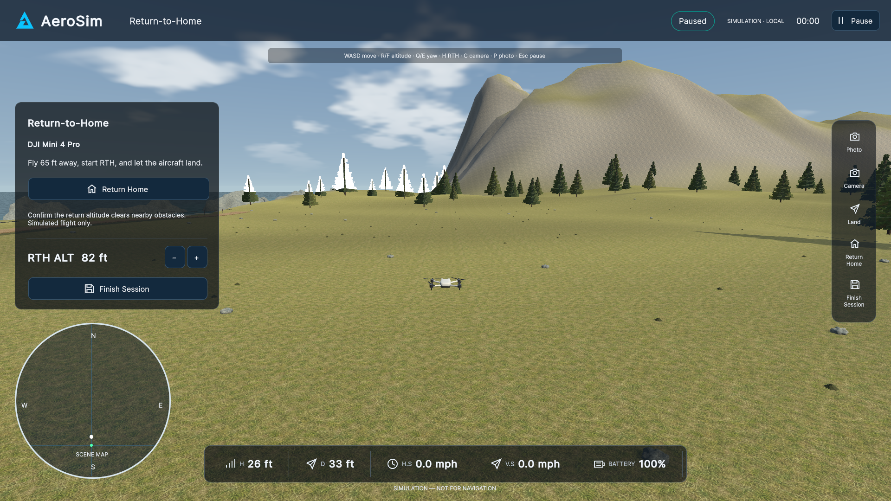</a></figure></div></section><p>页面是否完整可用、视觉差异、缩放/键鼠/保存回归和真实设备需分别验收；本图册不证明iOS真机、多人课堂或实时空域服务已完成。</p></main></html>